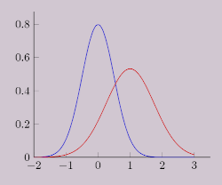

Home Previous: general-midi Next: oud Contents

PDF Plugin
The PDF plugin defines several probability density functions. Most
of these functions were ported from
Nyquist.
All PDF functions take an optional :RNF keyword to set a random-number
generator. If specified an RNF function should take a single argument n and
return a float between 0 and n. The default RNF is RANDOM.
(lambda n) → q where 0 ≤ q < n
Continuous Distributions
(LINEAR-DIST (&key (scale 1.0)(rnf #'random))
(EXPONENTIAL-DIST (&key (delta 2)(rnf #'random))
(GAMMA-DIST (&key (mu 5)(rnf #'random))
(BILATERAL-DIST (&key (mu 0)(tau 1)(rnf #'random))
(CAUCHY-DIST (&key (tau 1.0)(rnf #'random))
(HYPERBOLIC-COSINE-DIST (&key (rnf #'random))
(GAUSSIAN-DIST (&key (mu 0)(sigma 1)(rnf #'random))
(BETA-DIST (&key (a 1)(b 1)(rnf #'random))
Discrete Distributions
(BERNOULLI-DIST (&key (p 0.5)(a 1)(b 0)(rnf #'random))
(BINOMIAL-DIST (&key (p 0.5)(count 10)(rnf #'random))
(GEOMETRIC-DIST (&key (p 0.5)(count 10)(rnf #'random))
(POISSON-DIST (&key (mu 5)(rnf #'random))
Factories
For each distribution function described above there is a corresponding
factory function which takes the same parameters and returns a new
parameter-less function.
For distribution function
(FOO-DIST &key a b c)
The corresponding factory is
(FOO-PDF &key a b c minmax)
The optional minmax argument has the form (min max) and sets the allowed range
of values.
(LINEAR-PDF (&key (scale 1.0)(rnf #'random) minmax)
(EXPONENTIAL-PDF (&key (delta 2)(rnf #'random) minmax)
(GAMMA-PDF (&key (mu 5)(rnf #'random) minmax)
(BILATERAL-PDF (&key (mu 0)(tau 1)(rnf #'random) minmax)
(CAUCHY-PDF (&key (tau 1.0)(rnf #'random) minmax)
(HYPERBOLIC-COSINE-PDF (&key (rnf #'random) minmax)
(GAUSSIAN-PDF (&key (mu 0)(sigma 1)(rnf #'random) minmax)
(BETA-PDF (&key (a 1)(b 1)(rnf #'random) minmax)
(BERNOULLI-PDF (&key (p 0.5)(a 1)(b 0)(rnf #'random) minmax)
(BINOMIAL-PDF (&key (p 0.5)(count 10)(rnf #'random) minmax)
(GEOMETRIC-PDF (&key (p 0.5)(count 10)(rnf #'random) minmax)
(POISSON-PDF (&key (mu 5)(rnf #'random) minmax)
Home Previous: general-midi Next: oud Top Contents